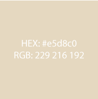
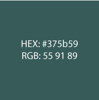
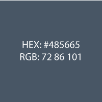
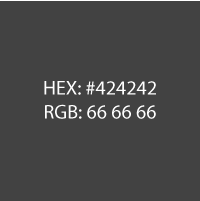

Color Scheme
   Light Tan
The light tan color, HEX #e5d8c0, will be used as a background color for the site. It is light, and not distractin, but more pleasing to the eye than a harsh white.
Forest Green
The forest green color, HEX #375b59, will be an accent color used sparingly thorughout the site.
Dusty Blue
The dusty blue color, HEX #485665, will be used for the navagation bar, all headings, and other accents as neede to pull the color scheme together.
Dark Grey
The dark grey color, HEX #424242, will be used for the body copy.